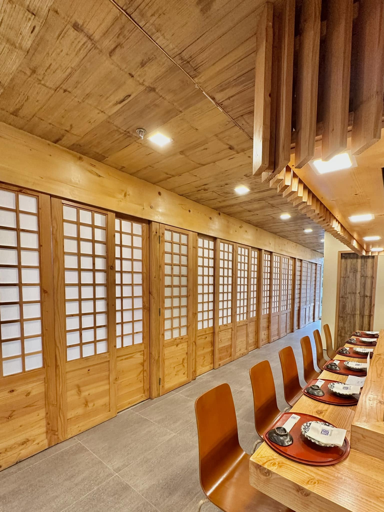
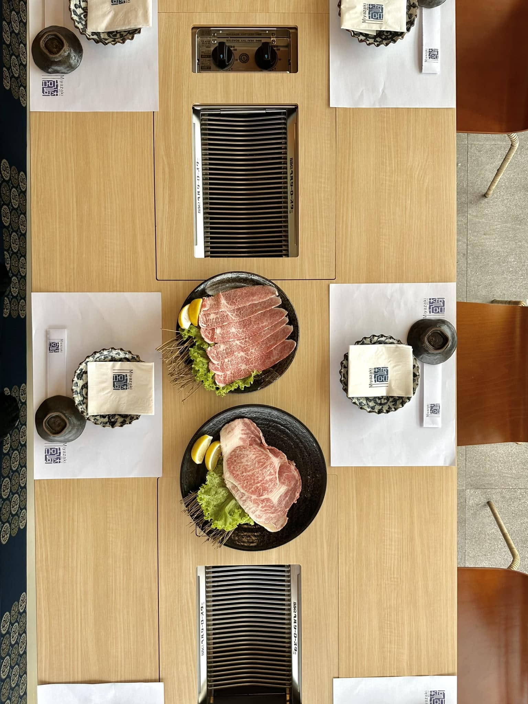

Sushi Bar
Pull up a seat and watch the nigiri and maki get built to order, one precise cut at a time.

Molito Complex · Alabang · Est. 2016
Sushi, sashimi, and teppanyaki from Chef Koichi Kondo — sushi bar, tatami rooms, and grill-at-your-table yakiniku, under one roof in Alabang.
はじまり — Since 2016
Miyazaki opened its doors in Molito Lifestyle Center in 2016, and has since grown through a third expansion to seat more of Alabang's regulars. The room is built to feel unhurried — modern lines softened by traditional Japanese materials, so the food stays the focus.
Every dish moves through the hands of Chef Koichi Kondo and a kitchen trained in the discipline that Japanese cooking asks for: the freshest cuts, precise knife work, and nothing on the plate that isn't earning its place.
お食事処 — Ways to Dine
Pull up a seat and watch the nigiri and maki get built to order, one precise cut at a time.
Shoji screens and low seating — a quieter, more traditional room for small groups.

Grill-at-your-table Japanese barbecue — smoke, sizzle, and full control of the flame.
Dinner and theatre in one — dishes prepared tableside on the hot iron griddle.
営業時間 — Visit Us
Hours shift slightly through the week — best to confirm the day's schedule on our Facebook page before heading over.
Molito Commercial Complex, Madrigal Ave, Alabang, Muntinlupa City
Mall parking on site. Dine-in, outdoor seating, and curbside pickup available.
Check Facebook for Updatesつながる — Follow Along